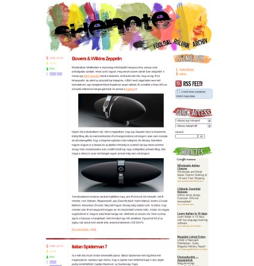

Tudom, hog folyton arról írunk, hogy készül az új theme. Tényleg készül. A múlt héten elég rosszul jött ki a lépés, mert nem nagyon tudtunk összeülni a részletek megvitatása végett. Szombat este végre sikerült sort keríteni egy rövid találkozóra, ahol megvitattuk min is kell még csiszolni. Sikerült közös nevezőre jutni a legfontosabb részletekben. A komment oldal még egyáltalán nincs kész és még a fordítást is el kell készítenünk, de talán az lesz a kisebb gond. Szóval rengeteg kis apróság van még hátra, és nem is akarunk olyan themét kiadni a kezünk kezül, amivel nem vagyunk teljesen elégedettek.
Az utóbbi időben csökkent az oldal színvonala, és a napi postok is ritkábbak lettek. Ez azért volt így, mert ha a sidenote-ról volt szó, akkor inkább a themét hegesztettük. Ha teljesen végeztünk a CSS-sel, akkor már csak a komment oldal van hátra, mint nagyobb egység, utolsó lépésként pedig a fordítást fogom megcsinálni egyik este. Itt van Red egy mailje, amivel próbál rávenni, hogy fejezzem be a részemet.
2008. 07. 04. 23:48 ‚Äì MTI ‚Äì A mai napon a “Red” n√©ven k√∂zismert blogger, vil√°gh√°l√≥s publicista jelent≈ës l√©p√©seket tett a sidenote.hu n√©ven k√∂zismertt√© v√°lt online napl√≥ √∫j k√ºlsej√©nek elk√©sz√≠t√©s√©ben. A szerencs√©sek m√°r megtekinthett√©k az oldal majdnem v√©gleges √∫j megjelen√©s√©t. Elk√©sz√ºlt az √∫n. “postok” bal oldali has√°bja √©s vannak elv√°laszt√≥ vonalak is. A beavatottak egy√∂ntet≈± tetsz√©s√ºket fejezt√©k ki az √∫j, korszakalkot√≥ grafikai megval√≥s√≠t√°s l√°tt√°n. Red √≠gy nyilatkozott: “Nagyon √∂r√ºl√∂k, hogy ennyire j√≥l siker√ºlt a diz√°jn. M√°r csak apr√≥bb sim√≠t√°sokat kell v√©gezn√ºnk ‚Äì gondolok itt a fejl√©c elk√©sz√≠t√©s√©re ‚Äì √©s mehet √©lesben az oldal. √ñtleteket term√©szetesen tov√°bbra is sz√≠vesen vesz√ºnk!” Meg nem er≈ës√≠tett, a bloggerekhez k√∂zel √°ll√≥ forr√°sok szerint az arculatv√°lt√°sra a 100. bejegyz√©s megjelentet√©sekor ker√ºl sor.
Nem hiszem, hogy sikerül pont a 100. bejegyzés idejére időzíteni az új theme megjelenését (ez már a 97.), persze jó lenne, de legkésőbb jövő hét végére tényleg elkészülünk. Ha Red nagyon ragaszkodik a 100-as számhoz, akkor nem lesz minden nap post. Végül itt egy kép, hogy mégse legyen olyan sivár ez a bejegyzés mint amilyen.


{kind=link}